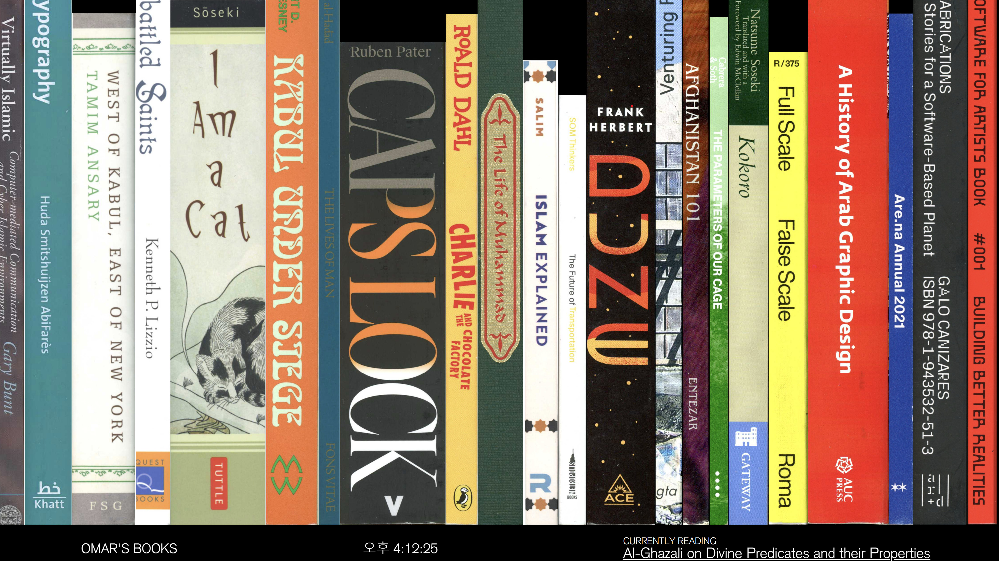
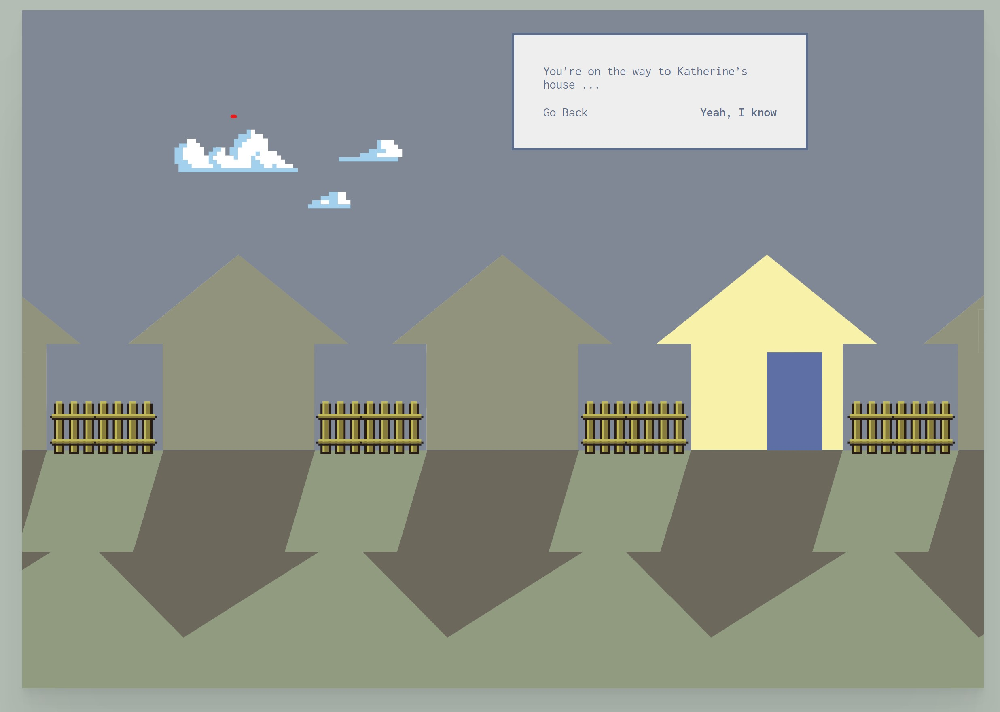
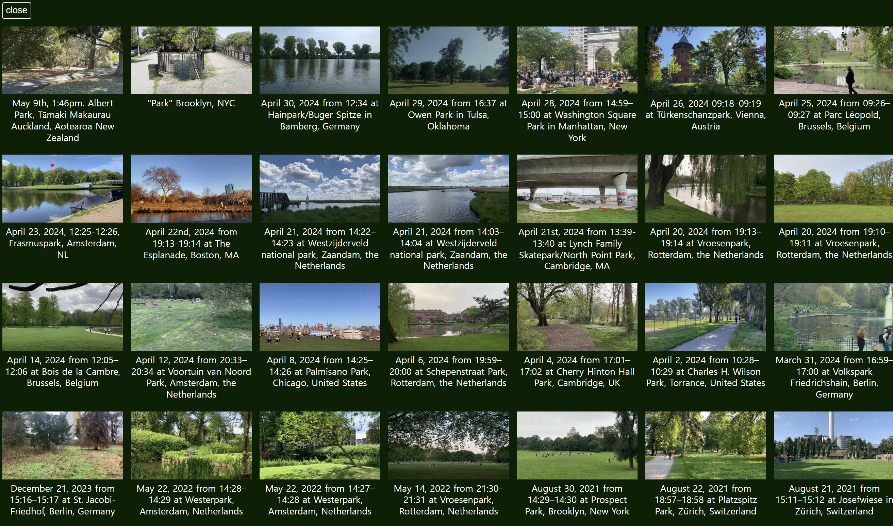

첫번째
오마르의 책은 첫 화면이 자신이 읽은 책들을 한 눈에 볼 수가 있다. 배경이 검은색이고 책들은 여러 가지 색이라서 대비가 뚜렷하다. 오른쪽부터 1번이 시작돼서 한국에선 보기 드문 순서라서 참신했다. 크기 별로 정리하지 않고 진짜 책장에서 볼 수 있는 배열이다. 마우스를 올리면 내가 선택한 것 이외에 것들은 어둡게 처리가 돼서 헷갈리지 않는다. 가로로 되어있던 제목과 글쓴이가 보기 좋게 나온다. 모바일로 접속했을 때는 단어가 조금 더 작아지며 화면에 꽉 찬다. 컴퓨터에서 마우스로 옆으로 넘기는 것보다 손으로 오른쪽으로 쭉 넘기면 부드럽게 화면이 넘어간다.
두번째
도코노는 게임하는 느낌의 디자인이다. 집에 들어가는 형태로 만들어졌다. 내가 들어가야 할 곳 빼고 어두운 계열이라 대비가 좋아서 눈에 확 들어왔다. 말풍선이 나에게 말을 걸며 다음 화면으로 넘어가는데 한 페이지를 본다는 생각보단 단계를 깨는 기분이다. 꽃들을 누르면 설명들이 나오고 자세히 볼 수 있는 기능도 있다. 텔레비전을 누르면 마른 꽃들이 덩어리였던 게 하나씩 사라지는 영상이 틀린다. 분위기가 오묘해서 기괴한 느낌도 든다. 모바일로는 접속이 불가능하지만 컴퓨터로 접속해달라는 문구를 초록으로 강조해 준다. 모바일로 들어왔을 경우에 다시 컴퓨터로 접속하고 어디에 들어가야 하는지를 보여준다. 접속이 불가능한 이유가 안 나와서 궁금증이 생긴다.
마지막
원미닛파크는 1분짜리 영상들이 모여서 만들어진다. 공원답게 연두색으로 배경색을 둬서 더욱 뜻이 잘 전달된다. 오른쪽 위에 1분이 지나가는 초가 세어진다. 왼쪽 하단에 검색을 누르면 세계 곳곳에서 찍어올린 나만의 정원들이 있다. 서로 모르는 사람들끼리 나의 공원을 공유한 다는 것이 마음에 들고 좋은 기능이다. 언제 올렸는지 헷갈리지 않게 연도와 달 별로 배열이 되어있다. 검색 옆에는 소리를 들을 수 있는 기능도 있어서 그곳에 있지 않더라도 생생하게 영상을 시청한다. 검색하지 않고 1분을 채우면 다음 영상으로 알아서 넘어가기 때문에 간편하다. 모바일로 접속하면 가로였던 영상들이 폰에 맞추어 세로로 된다. 별 차이는 없지만 오히려 안 헷갈려서 좋다.